Clase de hidrocarburi:
Alcani
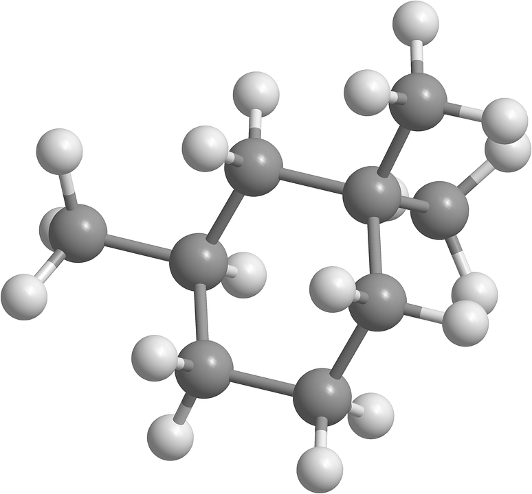Alcanii sunt hidrocarburile în care nu apar decât legături simple de tipul C─C si C─H şi la care raportul numeric dintre cele două tipuri de atomi este exprimat prin formula CnH2n+2, unde n reprezintă numărul atomilor de carbon. În continuare, detalii despre alcani.
Denumirea alcanilor
Dacă i se dau lui n valori naturale succesive (şirul natural al numerelor) se obţine seria omoloagă a alcanilor. Numele alcanilor se formează după regulă, cu excepţia primilor patru termeni care au denumiri specifice.
n=1 CH4 metan CH4
n=2 C2H6 etan CH3─CH3
n=3 C3H8 propan CH3─CH2─CH3
n=4 C4H10 butan CH3─CH2─CH2─CH3
n=5 C5H12 pentan CH3─CH2─CH2─CH2─CH3
n=6 C6H14 hexan CH3─CH2─CH2─CH2─CH2─CH3
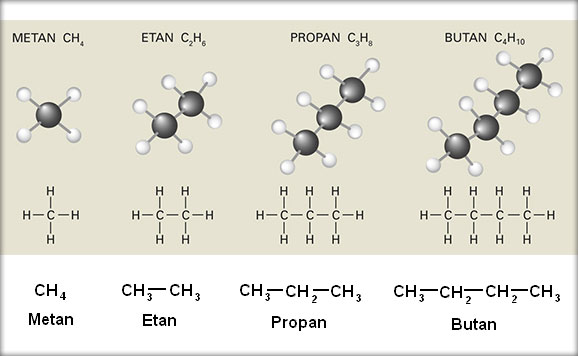Toţi aceşti alcani au catene liniare. La alcanii cu patru atomi de carbon sau mai mulţi poate apărea ramificarea lanţului. De aceea, denumirea alcanilor liniari este completată cu prefixul normal iar denumirea alcanilor ramificaţi se completează cu prefixul "izo". Cicloalcanii sunt hidrocarburi ciclice saturate care conţin o catenă ciclică şi au formula generală CnH2n. Dacă din molecula unui alcan se îndepărtează un atom de hidrogen rezultă un radical alchil.
CH3─ (metil) ; ─CH2─ (metilen) ; ─CH─ (metin)
CH3─CH2─CH2─ (propil)
Proprietăţi fizice
Punctele de topire şi fierbere ale alcanilor cresc odată cu creşterea numărului de atomi de carbon. Ramificarea determină micşorarea punctului de fierbere. Alcanii de la C1 până la C4 sunt gazoşi, cei de la C4 până la C15 sunt lichizi iar alcanii superiori sunt solizi. Deoarece alcanii gazoşi nu au miros, pentru depistarea scăpărilor de gaze din conducte şi de la aragaz se folosesc compuşi cu miros respingător, de avertizare, numiţi mercaptani.
Proprietăţi chimice
Denumirea de parafine provine de la “parum affinis”- afinitate (chimică) mică, adică au reactivitate chimică scăzută. Reacţiile chimice la care participă alcanii se grupează după natura legăturilor covalente care se desfac(legăturile C─H se desfac la substituţie, dehidrogenare, oxidare; legăturile C─C se desfac la descompunere termică, izomerizare, ardere).
1. Reacţiile de substituţie
Halogenarea:→ derivaţi halogenaţi
R─H + X2 → R─X + HX
2. Reacţiile de izomerizare au loc la temperatura de 50 - 100°C sub acţiunea unor catalizatori ca bromura sau clorura de aluminiu anhidră. Această reacţie a fost descoperită de chimistul român C.D. Neniţescu.
3. Reacţiile de oxidare sunt reacţiile care au loc în prezenţa oxigenului. Acestea pot fi: oxidări incomplete şi oxidări totale (arderi).
Oxidări incomplete ale metanului:
CH4 + 1/2O2 → CH3OH (metanol) la 60 atm şi 400°C
CH4 + O2 → CH2O (aldehida formica) + H2O catalizatori oxizi de azot, 400-600°C
2CH4 + O2 → 2CO + 4H2(gaz de sinteză)
Arderi: Oxidarea totala a alcanilor conduce la formarea dioxidului de carbon şi a apei, cu degajare de căldură. Aceasta explică folosirea unor alcani ca şi combustibili.
CH4 + 2O2 → CO2 + 2H2O + Q(căldură)
4. Descompunerea termică a alcanilor
Alcanii prezintă stabilitate termică ridicată (la temperaturi mai mici are loc cracarea acestora,iar la temperaturi mai mari de de 650°C are loc dehidrogenarea).
Cracare
CH3─CH2─CH2─CH3 → CH4 (metan) + CH2═CH─CH3 (propena)
→ CH3─CH3 (etan) + CH2═CH2 (etena)
Dehidrogenare
CH3─CH2─CH2─CH3 → CH2═CH─CH2─CH3 (1-butenă)+ H2{jcomments on}
→ CH3─CH═CH─CH3 (2-butenă)+ H2
Alchene
Alchenele sunt hidrocarburile aciclice care conţin în molecula lor o legătură dublă între doi atomi de carbon. Alchenele au formula generală CnH2n, unde n reprezinta numărul de atomi de carbon din moleculă. Citiţi mai multe detalii în cele ce urmează.
Datorită prezenţei legăturii duble, alchenele fac parte din clasa hidrocarburilor nesaturate.
Dacă dăm valori lui n în formula generală a alchenelor, obţinem seria lor omoloagă. Compuşii se denumesc prin înlocuirea sufixului „an” de la alcani cu „enă”.
Trebuie să remarcăm că seria alchenelor începe de la n=2.
Exemplu: H2C═CH2 ------ etenă
CH3─CH═CH2 ------- propenă
CH3─CH2─CH═CH2 ------- butenă, iar lista poate continua.
La alchenele cu mai mult de trei atomi de carbon, se denumeşte atomul purtător al dublei legături:
CH2═CH─CH2─CH3 (1- butena)
CH3─CH═CH─CH3 (2-butena)
La o catenă ramificată, se precizează atât poziţia dublei legături cât şi poziţia ramificaţiei, folosind indici numerici, alegându-se situaţia în care indicele care arată poziţia dublei legături să fie minim. Aveţi un exemplu în imaginea de mai jos:
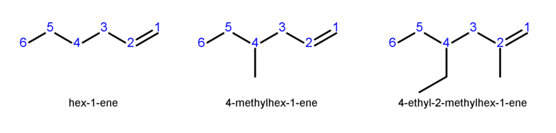În afară de izomeria de catenă, întâlnită la alcani, alchenele pot genera un nou tip de izomerie, denumită izomerie de poziţie. Cel mai întâlnit caz este 1-butena şi 2-butena.
Un alt tip de izomerie este izomeria geometrică ce se referă la poziţia substituenţilor faţă de legătura dublă C═C. De exemplu, 2-butena prezintă izomerii geometrici „cis” şi „trans”.
De la alchene provin doi radicali importanţi ce intră în compoziţia unui număr mare de substanţe organice: vinil şi alil.
OBŢINEREA ALCHENELOR
a) Deshidratarea alcoolilor, prin încălzire cu acid sulfuric la 150 - 200°C.
R-CH2-CH2-OH (alcool) --> R-CH=CH2 (alchena) + H2O
b) Dehidrohalogenarea derivaţilor halogenaţi: La încălzire cu baze tari, în soluţii alcoolice, derivaţii halogenaţi elimină hidracid cu formarea unei alchene:
R-CH2-CH2X (derivat halogenat) --> R-CH=CH2 + HX , unde X poate fi F, Cl, Br sau I.
c) Cracarea alcanilor: În acest proces, larg aplicat în industrie, se formează cantităţi mari de alchene.
PROPRIETĂŢI FIZICEAlchenele pot fi gazoase, lichide sau solide, după numărul atomilor de carbon din moleculă. Alchenele de la C2 la C5 sunt gaze, cele de la C5 la C18 sunt lichide, iar alchenele superioare sunt solide.
Punctele de fierbere şi de topire cresc o dată cu masa moleculară, dar sunt mai mici decât la alcanii corespunzători. Au densitatea mai mică decât apa, sunt insolubile în apă, dar solubile în solvenţi organici. Sunt incolore şi fără miros.
PROPRIETĂŢI CHIMICE
Datorită prezenţei dublei legături, reactivitatea chimică a alchenelor este mai mare decât a alcanilor.
I) Reacţii de adiţie
a) Adiţia hidrogenului:
R─CH═CH2 (alchenă) + H2 --> R─CH2─CH3 (alcan)
Procesul de hidrogenare la temperaturi cuprinse între 80 - 200°C şi până la 200 atm. Drept catalizatori se folosesc ca Ni, Pt, Pd, etc.
b) Adiţia halogenilor la alchene conduce la derivaţi di-halogenaţi vicinali (halogenul se leagă la atomi de carbon vecini).
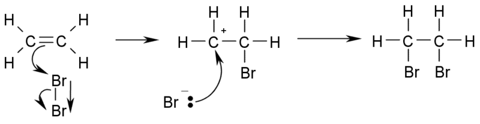c) Adiţia de hidracizi la alchene duce la obţinere de derivaţi mono-halogenaţi:
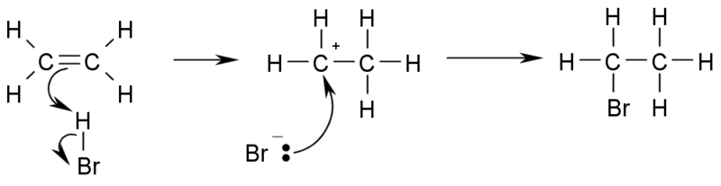Atunci când alchena este simetrică, adiţia decurge fără condiţii, ca în exemplul de mai sus. Dacă alchena este asimetrică, atunci se aplică regula lui Markovnikov (atomul de halogen se fixează la atomul cel mai sărac în hidrogen).
Exemplu:
R-CH=CH2 (alchenă asimetrică) + HCl --> R-CHCl-CH3 (derivat halogenat)
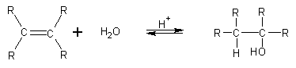d) Adiţia apei la alchene duce la formarea alcoolilor (dacă avem o alchenă nesimetrică, se aplică regula lui Markovnikov).
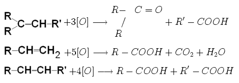
II) Reacţia de oxidare
Oxidarea cu permanganat de potasiu în mediu de acid sulfuric determină ruperea dublei legături cu obţinere de acizi sau cetone, în funcţie de structura alchenei supuse oxidării:
III) Reacţia de polimerizare
Prin polimerizare se înţelege procesul chimic prin care un mare număr de molecule identice, ale unor compuşi nesaturaţi, se leagă între ele, formând o moleculă unică (macromoleculă). Schematic, procesul de polimerizare se reprezintă:
nA → ─[A]n─
Exemplu: nCH2═CH2 → ─ [CH2─CH2]n ─ (polietenă)
Indicele n, numit grad de polimerizare, arată numărul de molecule de etenă care alcătuiesc lanţul macromolecular. Substanţa A este monomer, iar produsul final este polimerul.
Alchine
• Alchinele sunt hidrocarburile care conţin una sau mai multe triple legături în moleculă. Compuşii nesaturaţi care conţin în molecula lor atât legături triple cât şi duble se numesc enine.
• Alchinele aciclice prezintă o nesaturare echivalentă egală cu de două ori numărul triplelor legături prezente în moleculă. Ca şi combinaţii ale carbonului cu hidrogenul, alchinele aciclice cu o singură triplă legătură în moleculă prezintă o formulă moleculară generală CnH2n-2.
• Alchinele se pot clasifica după: – numărul triplelor legături din moleculă; – natura sistemelor ciclice sau aciclice din moleculă.
Nomenclatura alchinelor:
Se formează prin înlocuirea terminaţiei „an” a denumirii hidrocarburii saturate cu aceeaşi catenă de atomi de carbon prin terminaţia „ină”, precizându-se şi poziţia triplei legături în moleculă.

Catena este numerotată în aşa fel încât legăturile triple să primească cele mai mici numere posibile. Dacă în moleculă sunt prezente două sau mai multe triple legături la terminaţii se adaugă particulele multiplicative „di”, „tri”, „tetra” etc., terminaţiile devenind „-adiină”, „-atriină” .
Denumirile generice a acestor hidrocarburi (liniare sau ramificate) sunt „alchină”, „alcadiină”, „alcatriină” . Există şi posibilitatea nomenclaturii radical-substitutive a alchinelor având ca şi compus de referinţă acetilena: alchil- sau arilacetilenă, pentru alchine cu legătura triplă marginală, respectiv alchil(aril)-alchil’(aril’)-acetilenă, pentru alchine cu tripla legătură nemarginală.
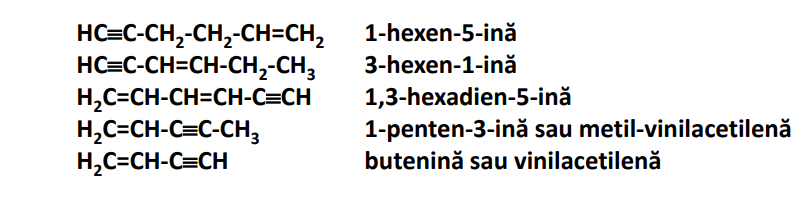
Hidrocarburile nesaturate aciclice neramificate având atât legături duble cât şi triple se denumesc prin înlocuirea terminaţiei „an” din numele hidrocarburii saturate corespunzătoare cu terminaţia „enină” (o legătură C=C şi o legătură CC), „adienină” (două legături C=C şi o legătură CC), „atrienină” (trei legături C=C şi o legătură CC), „endiină” (o legătură C=C şi două legături CC). Catena este numerotată în aşa fel încât numerele de poziţie cele mai mici posibile se dau legăturilor duble şi triple, legăturile duble fiind de regulă prioritare.
Atomii de carbon ai triplei legături prezintă o hibridizare sp.
Geometria celor doi orbitali atomici hibrizi este liniară cu un unghi de 180 între legături şi cu cei doi orbitali p nehibridizaţi în două planuri perpendiculare.
Prin întrepătrunderea liniară a doi orbitali atomici hibridizaţi sp se formează o legătură , iar prin întrepătrunderea paralelă a celor doi orbitali p se formează două legături de tip situate în planuri reciproc perpendiculare. Legătura şi cele două legături formează tripla legătură carbon-carbon. Atât creşterea proporţiei de orbitali s în orbitalii sp de legătură, care reduce în mod corespunzător lungimea legăturii , cât şi cele două legături determină o lungime de legătură mai mică pentru tripla legătură carbon-carbon, de aproximativ 1,20 Å, faţă de 1,34 şi 1,54 Å în legătura dublă respectiv simplă.
Coliniaritatea celor trei valenţe ale atomilor de carbon din tripla legătură, determinată de hibridizarea sp a acestora, elimină prezenţa diastereoizomeriei „cistrans” prezentă la alchene, iar lungimea relativ mare a elementului structural ce cuprinde tripla legătură conduce la imposibilitatea inserării acestuia într-un ciclu mai mic de opt atomi de carbon, fără a genera tensiuni angulare importante. Astfel alchina cu cel mai mic ciclu cunoscut este ciclooctina
Legătura triplă este nepolară în molecule simetrice şi este foarte puţin polară în molecule nesimetrice. Legăturile triple sunt însă uşor polarizabile datorită mobilităţii mari a electronilor , polarizabilitatea acestora fiind mai importantă decât în cazul legăturilor duble carbon-carbon.
Aceasta face posibilă deplasarea unei perechi de electroni la unul din atomii da carbon ai triplei legături atât sub influenţa unui reactant electrofil, cât şi a unui reactant nucleofil, favorizând astfel o reacţie de adiţie.
In mod similar cu alchenele, alchinele dau reacţii de adiţii electrofile şi radicalice. Sunt posibile de asemenea şi adiţii a căror mecanism de reacţie este sincron, acestea fiind numite adiţii concertate.
In mod similar cu alcanii, alchinele pot da şi reacţii de substituţii radicalice.
Datorită proporţiei relativ mari (50%) de orbitali s în orbitalii sp de legătură a atomilor de carbon din tripla legătură, electronegativitatea acestora faţă de atomul de hidrogen va fi mărită în acetilenă sau alchinele cu triple legături marginale. Aceasta va conduce la o polarizare a legăturii carbon - hidrogen în favoarea atomului de carbon concretizată printr-un moment dipolar de legătură cu valoarea de ~ 0,4 D.
Astfel atomul de hidrogen al triplei legături marginale din alchine va prezenta un caracter slab acid putând fi uşor substituit cu reactanţi electrofili în cataliză bazică.
In concluzie alchinele dau reacţii de adiţii nucleofile, electrofile, radicalice, concertate şi reacţii de substituţie la atomii de hidrogen ai triplelor legături marginale.
Proprietăţi fizice
Alchinele sunt molecule nepolare sau foarte puţin polare asociate intermolecular prin legături foarte slabe de tip van der Waals sau prin legături slabe dipol-dipol. Punctele de fierbere şi de topire ale alchinelor sunt scăzute, dar ceva mai mari decât ale alchenelor şi alcanilor cu acelaşi număr de atomi de carbon. Ca şi în cazul alcanilor punctele de topire cresc într-o serie omoloagă odată cu creşterea catenei şi implicit a masei moleculare.
Punctele de topire sunt influenţate de posibilităţile de „împachetare” a moleculelor în reţeaua cristalină, respectiv de simetria moleculelor.
Datorită faptului că în fază lichidă simetria moleculară are un rol mai puţin important decât în fază cristalină solidă, punctele de fierbere vor creşte liniar cu masa moleculară.
Densitatea şi indicii de refracţie ale alchinelor vor fi scăzute comparativ cu a altor compuşi organici, ceea ce confirmă o slabă asociere intermoleculară în fază lichidă. Densitatea alchinelor este mai mică decât cea a apei.
Alchinele sunt insolubile în apă şi foarte puţin solubile în solvenţi polari Sunt uşor solubile în solvenţi nepolari (hidrocarburi) sau puţin polari (eteri, esteri, derivaţi halogenaţi: tetraclorură de carbon, cloroform etc.).
Datorită polarităţii legăturii carbon-hidrogen, acetilena şi alchinele inferioare cu tripla legătură marginală prezintă o solubilitate crescută în apă sau alţi solvenţi polari cum ar fi acetona. Astfel, un volum de apă dizolvă un volum de acetilenă la 18C, un volum de alcool etilic dizolvă şase volume de acetilenă la 18C, iar un volum de acetonă dizolvă douăzeci şi cinci de volume de acetilenă la 15C şi presiune atmosferică de 760 mmHg. Acest fenomen poate fi explicat prin formarea unor legături slabe de hidrogen cu atomii de oxigen din moleculele solventului polar.

Acetilena este un compus instabil din punct de vedere termodinamic, la comprimare se descompune prin explozie în carbon şi hidrogen :
HCCH → 2C + H2
Din acest motiv se transportă în butelii din oţel umplute cu azbest (o masă minerală poroasă) în care acetilena este dizolvată în acetonă la presiune de 15 atm. Astfel, la 15C şi o presiune de 12 atm., un volum de acetonă dizolvă trei sute de volume de acetilenă.
Proprietăţi chimice
Proprietăţile chimice ale alchinelor sunt determinate de prezenţa triplei legături carbon-carbon şi de polaritatea legăturii carbon-hidrogen din acetilenă sau alchinele cu triplă legătură marginală. Cele mai importante reacţii sunt cele de adiţie electrofile, nucleofile, radicalice şi concertate la tripla legătură din alchine şi reacţii de substituţie la atomii de hidrogen ai triplelor legături marginale.
Reacţii de adiţii la alchine

Reacţiile de adiţie electrofile (AE) decurg după un proces asincron. Reactantul electrofil (notat cu X+) va ataca atomul de carbon cu densitate mărită de electroni al triplei legături polarizate în prealabil formându-se un intermediar carbocationic. In a doua etapă de reacţie, acesta va reacţiona cu un reactant nucleofil (Yˉ) din sistem formându-se produsul de adiţie. Alchinele sunt mai putin reactive decat alchenele in aceste reactii.
In cazul reactanţilor nucleofili prin atomi de oxigen, mai puţin reactivi, adiţiile nucleofile sunt posibile doar în prezenţa unor catalizatori electrofili de tipul cationilor unor metale tranziţionale ca: Hg2+ , Zn2+ , Cd2+ , Ni2+ , Cu+ etc, când adiţiile nucleofile (AN) sunt de fapt reacţii ce decurg în cataliză electrofilă după un proces asincron. Cationul metalului tranziţional (care este un catalizator, nu un reactant electrofil) formează un complex cu o pereche de electroni ai triplei legături carbon-carbon din molecula alchinei, favorizând polarizarea acesteia. Reactantul nucleofil (notat Nu sau Nuˉ ) va ataca atomul de carbon cu densitate mărită de electroni al triplei legături polarizate în prealabil, sub acţiunea catalizatorului electrofil, formându-se un intermediar carbocationic. In a doua etapă de reacţie, acesta va reacţiona cu un reactant electrofil din sistem (E+ , care de regulă este protonul, H+) formându-se produsul de adiţie.
Alcadiene
Alcadienele sau dienele sunt hidrocarburi cu 2 legături duble în moleculă cu formula generală {\displaystyle C_{n}H_{2n-2}} {\displaystyle C_{n}H_{2n-2}}. Importanță practică au doar:
1,3-butadiena este o alcadienă conjugată simplă cu formula chimică C4H6. Este un compus chimic important din punct de vedere industrial, fiindcă este utilizat ca monomer pentru producerea cauciucului sintetic. De obicei, se folosește doar termenul de butadienă pentru a se face referire la acest compus, deși există și butadiena cumulată, 1,2-butadienă (care nu are utilizări importante).
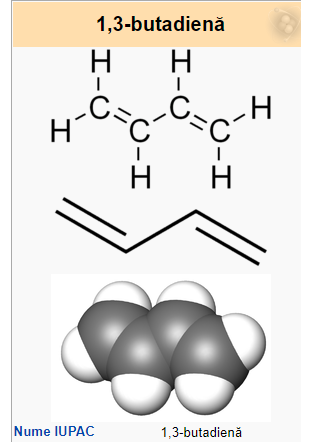
Izoprenul (2-metil, 1, 3-butadienă) este o hidrocarbură nesaturată din clasa dienelor. Scheletul izoprenului stă la baza terpenelor. Prin polimerizarea izoprenului se obține cauciucul.
Din izopren în afară de cauciuc se obțin o serie de substanțe asemănătoare celor naturale numite izoprenoinde, ca steroide, terpene, pe calea acidului mevalonic și a IPP (izopentenilpirofosfat) si DMAPP (dimetilalilpirofosfat). Izoprenul este produs de o serie de plante sau de plancton, având un rol probabil în procesele oxidative încă neclarificat, sau în membrana celulară a bacteriilor sunt legate de molecule de lipide, glicerină și eter.
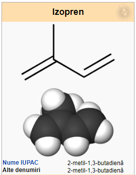
Ciclopentadiena este un compus organic din clasa ciclodienelor, cu formula C5H6. Este un lichid incolor cu un miros puternic și neplăcut. La temperatura camerei, această dienă ciclică suferă o dimerizare, formând diciclopentadiena, printr-o reacție de tipul Diels–Alder. Monomerul se poate reface prin încălzire.
Acest compus este folosit în majoritate pentru producerea de ciclopentenă și a derivaților ei, dar și ca precursor în chimia organometalică, pentru obținerea complecșilor ciclopentadienilici (precum sunt metalocenii).
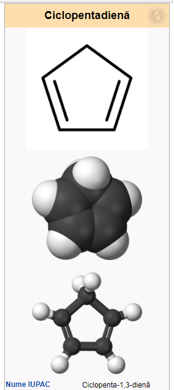
Arene
Hidrocarburile care au ca unitate structurală de bază nucleul benzenic se numesc hidrocarburi aromatice sau arene.
Arenele mononucleare cu catenă laterală saturată (benzenul şi omologii săi) au formula generală CnH2n-6 şi nesaturarea echivalentă 4.
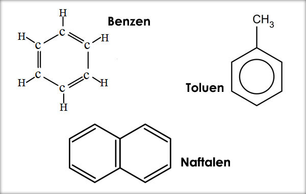
Arenele dinucleare cu nuclee condensate şi catenă laterală saturată (naftalina şi omologii săi) au formula generală CnH2n-12 şi nesaturarea echivalentă 7.
Arenele cu catena laterală se denumesc asemănător izoalcanilor, după următoarea regulă:
Proprietăţi fizice ale arenelor
Elemente de structură care determină proprietăţile fizice
Moleculele arenelor sunt slab polare sau nepolare şi au masele moleculare mari. Între molecule arenelor se exercită forţe van der Waals.
Puncte de fierbere şi de topire
Hidrocarburile aromatice mononucleare, cum sunt benzenul şi toluenul, sunt substanţe lichide la temperatura ambiantă. Punctele de fierbere cresc cu creşterea maselor moleculare.
Hidrocarburile aromatice polinucleare sunt substanţe solide, cristalizate, la temperatura obişnuită. Naftalina sublimează uşor şi se evaporă repede la temperatura camerei.
Solubilitate
Hidrocarburile aromatice sunt insolubile în apă, dar sunt solubile în substanţe organice, de exemplu în hidrocarburi.
Densitate
Benzenul şi alchilbenzenii au densităţi mai mici decât apa (0,8-0,86 g/cm3), dar mai mari decât ale celorlalte hidrocarburi cu acelaşi număr de atomi de carbon.
Proprietăţi organoleptice
Hidrocarburile aromatice au miros caracteristic „aromatic”.
Vaporii de benzen sunt toxici. Benzenul este o substanţă cancerigenă pentru om şi animale. Cancerigene sunt şi arenele polinucleare condensate.